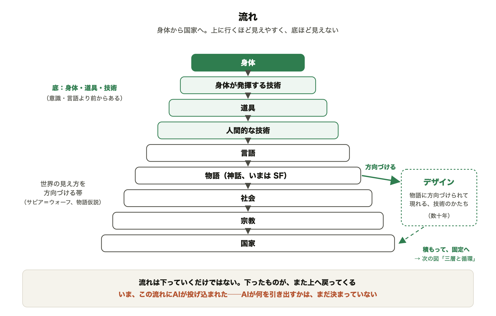
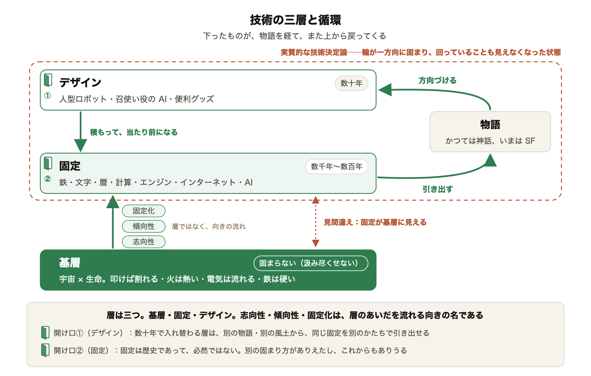
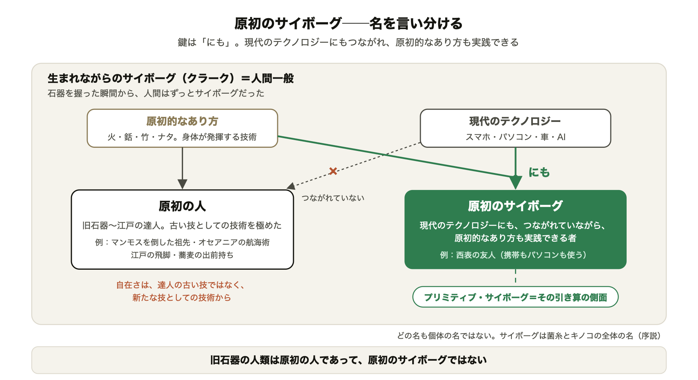

12 ／ 装置 五本の串
五本の串が、七列を貫く
左の四列で降り、右の三列で登る。身体から始まり、身体に戻る。技術の自走性を、生命の自律性の根っこにつけ戻す。

惑星的普遍技術——未開の未来へ 全体設計図 v1312 / 16
貫くテーマは二十本。五つの群に組まれ、四十四章を通る。
私たちは技術について何も知らない。知らないまま、技術は惑星を覆った。捨てることはできない。ならば、いちばん底まで降りて、技術が何であるかを身体で知り直し、そこから登り直す。
v13 ／ 2026-10-19 ／ 本文は v12 実測（44 章・411,304 字）、v13 の変更は 15 枚目
書籍設計室
降りて、折り返して、登る。序説で定義を置き、五つの部で底まで降り、三つの部で登り直す。一冊が、一本の線である。
技術とは何か、人間と道具、見えなくなる、内側からの転換、開かれた未来。二十本が五つの群をなし、群の順がそのまま本の順である。
旧 15 本はすべて生きている。v5〜v12 で加わった軸（三層・SF の逆説・守る主語・原初のサイボーグの再定義）を足し、重なるものを束ねて 20 本。番号は本の流れの順。
序説で定義を置き、AI の章で降りきり、夢の章で回収する。山と山のあいだの部は、背骨を一本ずつ太くする道である。
技術は、生命が生環境から何かを引き出す働きである。人間の発明ではなく、人間と分かれてもいない。その引き出し方が、歴史のなかで三層に固まる。
問うのは「人間とは何か」ではなく「どのような道具を持つのか」である。道具は新しい身体であり、夢であり、解けないジレンマでもある。
技術はよく働くほど見えなくなり、止まれなくなる。生まれたものが母胎を見下ろし、物語が未来を方向づける。後工程の制度では、届かない。
テクノロジーは捨てられず、外部もない。だから内側から目覚めるしかない。目覚めた者は、守る主語を入れ替える。
技術は一つではなく、何を引き出すかもまだ決まっていない。だから未来は、未開のまま開かれている。五本の串が、その全体を数える。
第八部で、ほぼ全部が鳴る。第二部は装備の部、第五部は降りる側でいちばん濃い。主を一か所に置き、ほかは一文で響かせる。
| 背骨 | は | 序 | 一 | 二 | 三 | 四 | 五 | 六 | 七 | 八 | 終 | 出現 | 主の章 | ||
|---|---|---|---|---|---|---|---|---|---|---|---|---|---|---|---|
| A | 2 | 技術は、生命から | △ | ○ | ◎ | ○ | ○ | ○ | ◎ | ◎ | ○ | ◎ | △ | 39 | 1-2・1-3・5-4・6-2・8-2 |
| 1 | 技術は、引き出す | △ | ◎ | ◎ | ○ | ○ | ○ | ◎ | ○ | ○ | ○ | 39 | 序2・1-1・1-4・5-4 | ||
| 3 | 菌糸とキノコ | ◎ | ○ | ○ | ○ | ○ | ◎ | ○ | ◎ | △ | 29 | 序2・6-2・8-1・8-3・8-5 | |||
| 10 | 三層と流れ | △ | ◎ | ◎ | ○ | ◎ | ◎ | ○ | △ | ○ | ◎ | 39 | 序2・1-3・3-2・4-3・8-1・8-2 | ||
| B | 4 | どのような道具を持つのか | △ | ◎ | ◎ | ◎ | ○ | ○ | ○ | ◎ | ○ | ◎ | 26 | 序2・1-1・1-4・2-1・2-2・6-4・8-5 | |
| 5 | 原初のサイボーグ | △ | ◎ | ◎ | ○ | ◎ | ○ | ○ | 18 | 序3・2-1・6-3 | |||||
| 6 | 夢 | ○ | △ | ◎ | ○ | △ | ◎ | ◎ | △ | 22 | 2-2・7-2・8-5 | ||||
| 7 | 道具のジレンマ | ○ | ○ | ◎ | ○ | ○ | ◎ | ○ | ○ | △ | 20 | 2-3・5-4 | |||
| C | 9 | 転倒 | ◎ | ○ | ○ | ◎ | ○ | ◎ | ◎ | ○ | ○ | 34 | 序1・3-3・5-2・6-1・6-2 | ||
| 8 | 見えていればいるほど、見えない | ◎ | ◎ | ◎ | ◎ | ○ | ○ | ○ | ○ | ○ | △ | 38 | 序1・1-4・2-2・3-3 | ||
| 11 | 自律と自走 | ◎ | ◎ | ○ | ○ | ◎ | ◎ | ○ | ○ | 31 | 序3・1-3・5-3・6-2 | ||||
| 12 | SFの逆説 | ○ | △ | ○ | △ | ◎ | ○ | △ | 11 | 5-4 | |||||
| 13 | 設計・使い方・規制では、届かない | ◎ | ○ | ○ | ○ | ◎ | ○ | ○ | ○ | ◎ | 28 | 序2・4-3・8-4 | |||
| D | 17 | 内側から | ◎ | △ | △ | ○ | △ | ○ | ◎ | ◎ | 21 | 序1・7-3・7-4・8-5 | |||
| 18 | 技術的意識の覚醒 | ◎ | △ | ○ | ○ | ○ | △ | ○ | ◎ | ○ | 28 | 序3・7-1・7-4 | |||
| 16 | 守る主語の転換 | ○ | ○ | △ | ○ | ◎ | ○ | ○ | 12 | 6-1 | |||||
| E | 15 | 未知の扉 | ◎ | ○ | △ | ○ | ◎ | ○ | ○ | ◎ | 22 | 序2・5-4・8-5 | |||
| 14 | 技術は、一つではない | ○ | ○ | ○ | △ | ○ | ◎ | ◎ | ◎ | ◎ | ◎ | 38 | 4-1・4-2・5-1・5-4・6-4・7-3・8-2・8-5 | ||
| 19 | 未開の未来 | ○ | ◎ | △ | △ | ○ | △ | ◎ | ○ | ◎ | ○ | 20 | 序3・6-4・8-1・8-3・8-5 | ||
| 20 | 五本の串 | ◎ | ◎ | ◎ | △ | ◎ | ◎ | ◎ | ◎ | ◎ | 26 | 序3・各部末マトリクス・8-M |
序説で予告し、本論で展開し、第八部で回収する。本書はこの三段を二十三の論点で踏んでいる。三段が、背骨の通り道である。
三段そろう論点は 23。回収が一文だけのもの 2（二つの中心、原初のサイボーグ）。予告だけで本論にも回収にも出ないもの 2（鏡、五つの視点）。序説の予告なしで三つの部を渡るもの 1（夢：2-2 ▸ 7-2 ▸ 8-5）。
v13：序説の予告を半分に、第八部の回収を「一本の線」の一節に。鏡は第八部で一度呼び戻し、九つの常識に「問いと答え」で九つ答える。
左の四列で降り、右の三列で登る。身体から始まり、身体に戻る。技術の自走性を、生命の自律性の根っこにつけ戻す。
技術は、基層・固定・デザインの三層からなる。固定は歴史であって、必然ではない。だから、作り直せる。


志向性（個）→ 傾向性（集団）→ 固定化（秩序）は層ではなく、層のあいだを流れる向きの名。置き場：序2 予告 ▸ 1-3 三語の定義 ▸ 3-2「流れ」本論 ▸ 4-3 固定の現場（制度） ▸ 8-1「一本の線」・8-2 素材 × AI ＝ 開け口で回収。
原初のサイボーグは、現代のテクノロジーにもつながれ、原初的なあり方も実践できる者。その名は、菌糸とキノコの全体の上に立つ。


結ぶ一文が要る：原初のサイボーグとは、菌糸とキノコの全体を、一つの身体で生きる者である。第二部に定義の言い方が三通り残る（著者判断、Ⅱ 高-2）。
形は変えない。重さを減らす。表は巻末へ、条件は本文へ、夢は二章に、回収は一節に。四十一万字を、三十五万字へ。
| 全体 | 411,304 | → | 約 35 万字（−15％） |
| 序説 | 39.4k | → | 29.5k |
| 部末の表 | 24.4k | → | 付録 約 1 万 |
| 脚注 | 51.8k | → | 37〜40k |
| 回収の章 | 7.9k | → | 一節 2.5k |
| 夢の章 | 21.5k | → | 11k＋10k の二章 |
変えないもの 八部。鏡。背骨二十本。五本の串。すべての場面（位置が動くだけ）。v12 の新節六つ（道具の自由と夢、達人のことではない、引き算から足す、都市に戻った日、災害を望む者たち、この風土で）は縮めない。定型句は各句 2〜3 か所を残す。著者判断の項目（火星・機器・年齢・条件Ⅲの名）は触らない。
章の中身ではなく、背骨の通り道を守るために使う。執筆室が参照する基準。
analysis/v12/I_貫くテーマ_v12.md（背骨・マトリクス・定型句）
analysis/v12/II_矛盾_v12.md
v13/src/13_structure-simplification-proposal.md（C 案）
method/00_v13方針.md